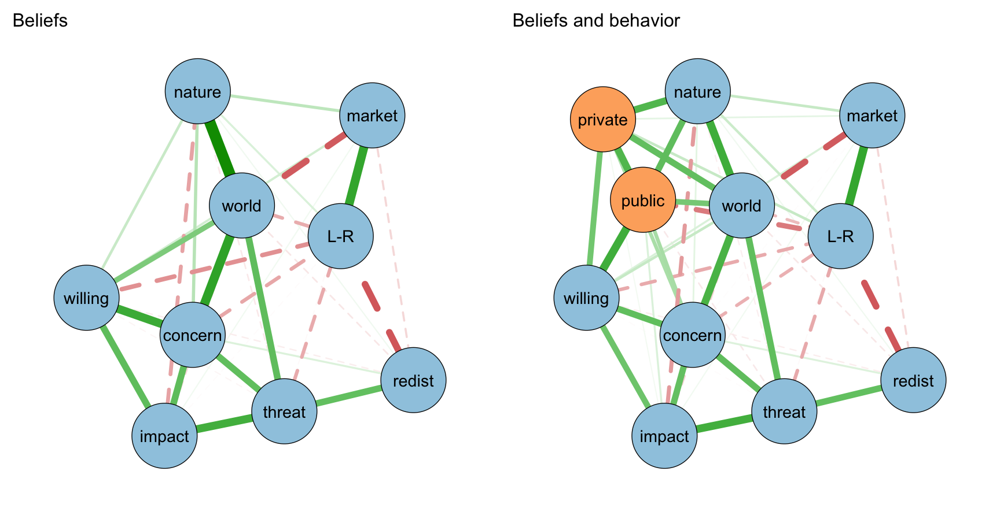
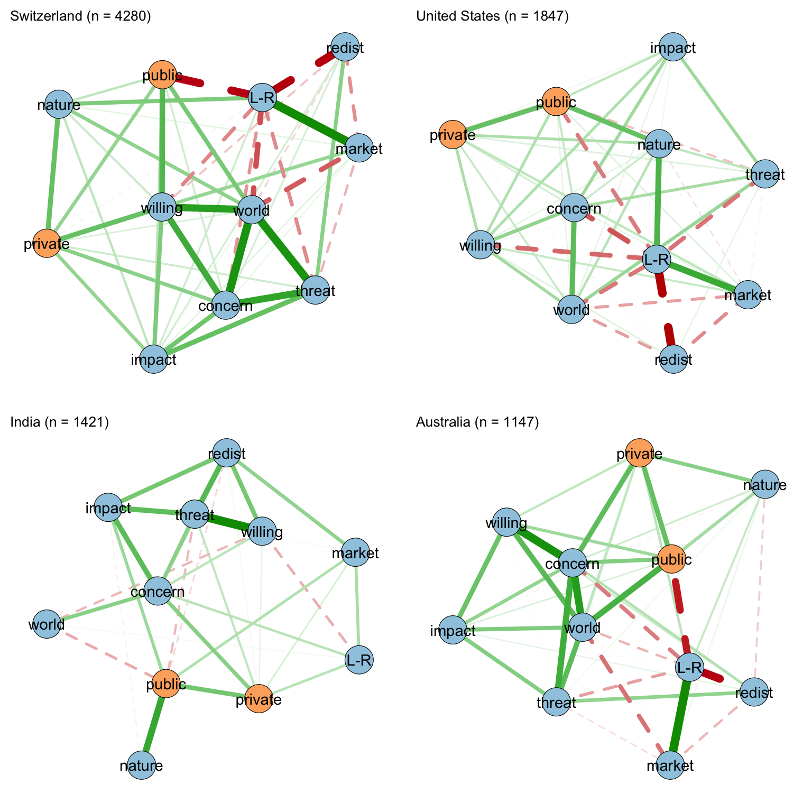
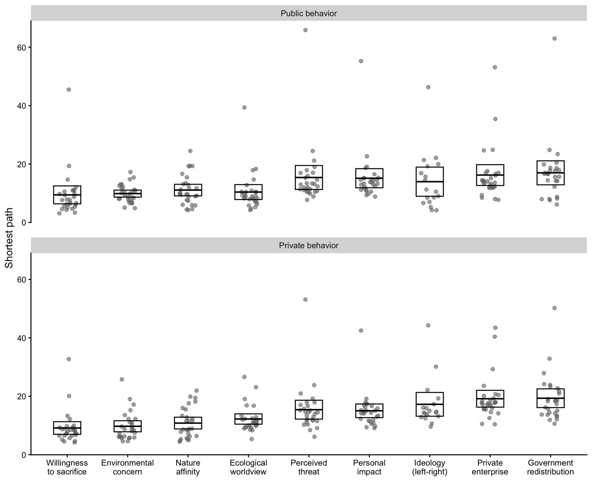

| Belief | Question wording | α |
|---|---|---|
| Environmental concern | Generally speaking, how concerned are you about environmental issues? (not at all concerned to very concerned) | |
| Personal impact | Environmental problems have a direct effect on my everyday life | |
| Willingness to sacrifice | How willing would you be to pay much higher prices in order to protect the environment? | 0.78 |
| How willing would you be to pay much higher taxes in order to protect the environment? | ||
| How willing would you be to accept cuts in your standard of living in order to protect the environment? | ||
| I do what is right for the environment, even when it costs more money or takes more time | ||
| Ecological worldview | Which statement comes closest to your opinion? The world’s climate has not been changing / has been changing mostly due to natural processes / about equally due to natural processes and human activity / mostly due to human activity | 0.77 |
| Modern science will solve our environmental problems with little change to our way of life (R) | ||
| We worry too much about the future of the environment and not enough about prices and jobs today (R) | ||
| Almost everything we do in modern life harms the environment | ||
| People worry too much about human progress harming the environment (R) | ||
| In order to protect the environment [COUNTRY] needs economic growth (R) | ||
| Economic growth always harms the environment | ||
| How willing would you be to accept a reduction in the size of [COUNTRY’s] protected nature areas, in order to open them up for economic development? (R) | ||
| It is just too difficult for someone like me to do much about the environment (R) | ||
| There are more important things to do in life than protect the environment (R) | ||
| There is no point in doing what I can for the environment unless others do the same (R) | ||
| Many of the claims about environmental threats are exaggerated (R) | ||
| I find it hard to know whether the way I live is helpful or harmful to the environment (R) | ||
| Perceived threat | Air pollution caused by cars (extremely dangerous to not dangerous at all for the environment) | 0.80 |
| Air pollution caused by industry (extremely dangerous to not dangerous at all for the environment) | ||
| Pesticides and chemicals used in farming (extremely dangerous to not dangerous at all for the environment) | ||
| Pollution of [COUNTRY’S] rivers, lakes and streams (extremely dangerous to not dangerous at all for the environment) | ||
| A rise in the world’s temperature caused by climate change (extremely dangerous to not dangerous at all for the environment) | ||
| Modifying the genes of certain crops (extremely dangerous to not dangerous at all for the environment) | ||
| Nuclear power stations (extremely dangerous to not dangerous at all for the environment) | ||
| Nature affinity | How much, if at all, do you enjoy being outside in nature? | 0.61 |
| In the last twelve months how often, if at all, have you engaged in any leisure activities outside in nature, such as hiking, bird watching, swimming, skiing, other outdoor activities or just relaxing? | ||
| Ideology (left-right) | Left-right position (far left to far right) of the party the respondent voted for in the last national election | |
| Private enterprise | Private enterprise is the best way to solve [COUNTRY’S] economic problems | |
| Government redistribution | It is the responsibility of the government to reduce the differences in income between people with high incomes and those with low incomes |
Environmental Belief System Networks and Pro-Environmental Behavior
Introduction
Explaining Pro-Environmental Behavior
Belief System Networks
Data and Measures
I use data from the 2020 wave of the International Social Survey Programme (ISSP) environment module, which surveyed 44,100 respondents across 28 countries. The module repeats a set of environmental attitude and behavior items that have been fielded since 1993, and it allows the belief network approach to be examined across a wide range of national contexts.
The ISSP does not include established measures such as the New Ecological Paradigm (NEP) or the Connectedness to Nature Scale (CNS), so I construct belief measures from the module’s attitude items. Using exploratory graph analysis I identify four belief dimensions and score each measure as the mean of its items, oriented so that higher values indicate more pro-environmental positions. One of these dimensions combines concern about the environment with items about willingness to make sacrifices for it. I divide it into three measures. The willingness items describe an intention to act rather than a belief about the environment, and they are likely to sit close to behavior for that reason alone. The remaining two items are only modestly related and measure different things, so I include each as its own node. Environmental concern is a single item asking how concerned the respondent is about environmental issues, from not at all concerned to very concerned. Personal impact is agreement that environmental problems have a direct effect on the respondent’s everyday life. Willingness to sacrifice is the mean of four items, willingness to pay much higher prices, to pay much higher taxes, and to accept cuts in one’s standard of living to protect the environment, and doing what is right for the environment even when it costs more money and time (α = 0.78). Ecological worldview captures low environmental and climate change skepticism and is the closest available analog to the NEP (α = 0.77). Perceived threat is the mean of seven items rating the danger posed by specific environmental hazards (α = 0.80). Nature affinity combines enjoyment of nature with the frequency of outdoor leisure and is a limited analog to the CNS (α = 0.61). The supplemental materials describe the scale construction.
I also include three political and economic beliefs as single-item measures. Ideology is the left-right position of the party the respondent reports voting for, which is unavailable in 10 countries. Support for private enterprise is agreement that private enterprise is the best way to solve the country’s economic problems, and support for government redistribution is agreement that it is the responsibility of the government to reduce the differences in income between people with high and low incomes. Both are measured on five-point scales with higher values indicating more agreement. The two items are only weakly related, so I include them as separate nodes rather than combining them into a scale. Table 1 lists the question wording for each belief measure and the reliability of each scale.
The dependent variable is pro-environmental behavior, which I separate into public and private behavior. Public behavior is a count of four collective actions, membership in an environmental group, signing a petition, donating money, and taking part in a protest. Private behavior is a count of two household actions, recycling and avoiding environmentally harmful products, each coded as done always or often. Exploratory graph analysis of the six items recovers this public and private grouping.
Results
I estimate a regularized partial correlation network of the belief and behavior measures for each of the 28 countries and for the pooled sample of all countries, using the graphical lasso with EBIC model selection. Each edge represents the association between two nodes after controlling for all other nodes in the network. To measure how close each belief is to behavior, I compute the shortest path from each belief node to the public and private behavior nodes using Dijkstra’s algorithm, with the length of each edge defined as the inverse of its absolute weight. A shorter path indicates a belief more closely connected to behavior.
Figure 1 shows the pooled network with and without the behavior nodes. In the belief network, the strongest tie is between ecological worldview and nature affinity (.30), and environmental concern is tied to both ecological worldview (.24) and willingness to sacrifice (.21). Personal impact is most closely tied to perceived threat (.21). Ideology is linked to the two economic beliefs, positively with support for private enterprise (.23) and negatively with support for government redistribution (-.17). The political and economic beliefs connect to the environmental beliefs mainly through negative ties with ecological worldview and willingness to sacrifice and a positive tie between redistribution and perceived threat. Once behavior is added, willingness to sacrifice has the strongest tie to public behavior (.21) and also connects to private behavior (.15), while ecological worldview and nature affinity connect to both. Environmental concern has weaker direct ties to public (.09) and private behavior (.09), and personal impact has almost none. Ideology has a negative tie to public behavior (-.13), and perceived threat and the economic beliefs have little or no direct connection to either type of behavior. In the pooled network willingness to sacrifice has the shortest path to public behavior (4.78), and nature affinity has the shortest path to private behavior (5.38) with ecological worldview close behind (6.10).

However, the pooled network masks differences across countries. Figure 2 shows the networks for four countries that span the range of results. In Switzerland, the typical case, willingness to sacrifice is closest to behavior in 97 percent of bootstrap resamples. In the United States nature affinity has the shortest path to behavior (83 percent of resamples), with ideology next. India is the clearest case where nature affinity is closest, holding in 96 percent of resamples. In Australia environmental concern is closest in 55 percent of resamples, with ideology close behind.
Table 2 reports the mean rank of each belief across countries, where a rank of one identifies the belief closest to behavior in a given country. Willingness to sacrifice has the shortest mean path to behavior in 16 of 28 countries and a mean rank of 2.25, and environmental concern is closest in 8 countries with a mean rank of 2.61. Nature affinity (3.50) and ecological worldview (3.50) follow. Perceived threat, personal impact, and ideology are further from behavior, and the two economic beliefs are the most peripheral. A nonparametric bootstrap with 1,000 resamples per country shows that the belief identified as closest holds in a majority of resamples in 25 of 28 countries. However, in several countries two beliefs are close to tied, and in Denmark and Finland they are tied exactly, so the cross-country pattern is more reliable than the ordering in any single country.

| Belief | Mean rank | Closest in | Bootstrap-supported |
|---|---|---|---|
| Willingness to sacrifice | 2.25 | 16 | 15 |
| Environmental concern | 2.61 | 8 | 6 |
| Nature affinity | 3.50 | 4 | 4 |
| Ecological worldview | 3.50 | 2 | 0 |
| Perceived threat | 5.75 | 0 | 0 |
| Personal impact | 5.93 | 0 | 0 |
| Ideology (left-right) | 5.94 | 0 | 0 |
| Private enterprise | 6.89 | 0 | 0 |
| Government redistribution | 7.36 | 0 | 0 |

Figure 3 shows the shortest path from each belief to each type of behavior across the countries. Willingness to sacrifice has the shortest average path to both public (9.4) and private behavior (9.1), with environmental concern close behind (9.9 and 9.7). Their confidence intervals overlap with each other and with ecological worldview and nature affinity, so these four beliefs form a group that is closer to behavior than the rest rather than a clear ordering. Environmental concern varies less across countries than willingness to sacrifice. Perceived threat and personal impact are well removed from both types of behavior, and the political and economic beliefs are the furthest, although ideology varies widely across the countries where it is available.
As noted, willingness to make sacrifices for the environment and environmental concern sit closest to behavior in most countries, ecological worldview and nature affinity are close behind, and perceived threat, personal impact, and the political and economic beliefs are further away. This is likely because willingness to sacrifice is itself close to an intention to act and concern reflects a general motivation to act, while perceived threat and personal impact describe environmental conditions rather than a disposition to respond to them. Notably, general concern about the environment is much closer to behavior than the belief that environmental problems affect one’s own life.